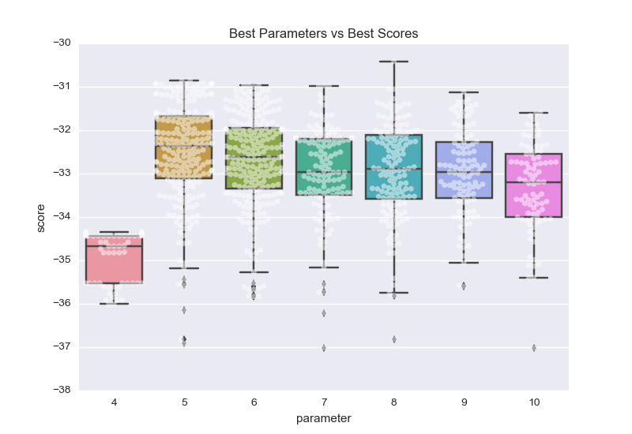

Using grid search on the entire data set, what is the optimal ``max_depth`` parameter for your model? How does this result compare to your initial intuition?
Best Score: -30.4146619578:.2f max-depth parameter with best score: 8
| Parameter | Count |
|---|---|
| 3.994 | 290 |
| 5 | 240 |
| 7 | 142 |
| 6 | 132 |
| 8 | 108 |
| 9 | 88 |
| Max-Depth | Median Score |
|---|---|
| 4 | -34.67 |
| 5 | -32.36 |
| 6 | -32.61 |
| 7 | -32.97 |
| 8 | -32.90 |
| 9 | -32.97 |
| 10 | -33.20 |
| Max-Depth | Max Score |
|---|---|
| 4 | -34.67 |
| 5 | -32.36 |
| 6 | -32.61 |
| 7 | -32.97 |
| 8 | -32.90 |
| 9 | -32.97 |
| 10 | -33.20 |
While a max-depth of 3 was the most common best-parameter, the max-depth of 5 was the median max-depth, had the highest median score, and had the highest overall score, so I will say that the optimal max_depth parameter is 5. This is slightly lower than my guess of 6, but doesn’t seem too far off, although a max-depth of 7 seems to be a slight improvement over 6 as well.
With your parameter-tuned model, what is the best selling price for your client’s home? How does this selling price compare to the basic statistics you calculated on the dataset?
Predicted value of client's home: $18,816.67
Median Value - predicted: $2,383.33
My three chosen features (lower_status, nitric_oxide, and rooms) seemed to indicate that the client’s house might be a lower-valued house, and the predicted value was about $1,266 less than the median median-value, so our model predicts that the client has a below-median-value house.
In a few sentences, discuss whether you would use this model or not to predict the selling price of future clients’ homes in the Greater Boston area.
I think that this model seems to make a reasonable prediction for the given data (Boston Suburbs in 1970), but I’m not sure that I agree that the data for an entire suburb is necessarily generalizable for a specific unit within a suburb. What this model predicts is that a suburb with attributes similar to the client’s would have our predicted median value, but within each suburb there would likely be a bit of variance. I would also think that separating out the upper-class houses would give a better model for this particular client, given the sub-median values for his or her features, and the right-skew of the data. If the goal was to predict median prices for suburbs, then I would use this model, but not for individual sales.